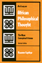
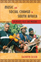

|
Seeking
Mandela
Peacemaking Between Israelis and Palestinians
Adam, Heribert and Kogila Moodley 248 pp •
6x9 • Spring 2005
paper 978-1-59213-396-3
cloth 978-1-59213-395-6
|

|
The
Afrocentric Idea
Asante, Molefi Kete
Revised and Expanded Edition
256 pp • 5.5x8.2 • Fall 1997
paper 978-1-56639-595-3
cloth 978-1-56639-594-6
|
|
African
Intellectual Heritage
A Book of Sources
edited by Asante, Molefi Kete and Abu S. Abarry
848 pp • 7x10 • Fall 1995
paper 978-1-56639-403-1
cloth 978-1-56639-402-4 |
 |
The African Transformation of Western Medicine and the Dynamics of Global Cultural Exchange
Baronov, David
264 pp • 6x9• Fall 2008
paper 978-1-59213-916-3
cloth 978-1-59213-915-6
|
 |
History
from South Africa
Alternative Visions and Practices
edited by Brown, Joshua, Patrick Manning, Karin Shapiro and Jon Wiener
467 pp • Spring 1991
paper 978-0-87722-849-3
cloth 978-0-87722-848-6 |
 |
West
African Pop Roots
Collins, John 382 pp • 6x9 • Spring
1992
paper 978-0-87722-916-2
cloth 978-0-87722-793-9 |
 |
Health
and Health Care In Developing Countries
Sociological Perspectives
edited by Conrad, Peter and Eugene B. Gallagher 336
pp • 6x9 • Spring 1993
cloth 978-1-56639-027-9 |

|
Women's Activism and Feminist Agency in Mozambique and Nicaragua
Disney, Jennifer Leigh
New in Paperback!
306 pp • 6x9 • Spring 2010
paper 978-1-59213-829-6
cloth 978-1-59213-828-9
|
 |
In
Griot Time
An American Guitarist in Mali
Eyre, Banning 280 pp • 6x9 • Spring
2000
paper 978-1-56639-759-9
cloth 978-1-56639-758-2
|

|
The Dance of Politics
Gender, Performance, and Democratization in Malawi
Gilman, Lisa
268 pp • 6x9 • Spring 2009
paper 978-1-59213-986-6
cloth 978-1-59213-985-9
|
 |
An
Essay on African Philosophical Thought
The Akan Conceptual Scheme
Gyekye, Kwame
Revised Edition
296 pp • 5.5x8.25 • Fall 1995
paper 978-1-56639-380-5
cloth 978-1-56639-383-6
|
 |
Trading
Down
Africa, Value Chains, and the Global Economy
Gibbon, Peter and Stefano Ponte 272 pp •
6x9 • Spring 2005
paper 978-1-59213-368-0
cloth 978-1-59213-367-3
|

|
Black
Theatre
Ritual Performance in the African Diaspora
edited by Harrison, Paul Carter, Victor Leo Walker II and Gus Edwards
432 pp • 7x10 • Spring 2002
paper 978-1-56639-944-9
cloth 978-1-56639-943-2
|
 |
Dust
to Dust
A Doctor's View of Famine in Africa
Heiden, David 224 pp • 7.5x10 •
Spring 1992
cloth 978-0-87722-912-4 |
|
Laboring
for Rights
Unions and Sexual Diversity Across Nations
edited by Hunt, Gerald 328 pp • 7x10
• Fall 1999
paper 978-1-56639-718-6
cloth 978-1-56639-717-9
|

|
Sounding Off
Rhythm, Music, and Identity in West African and Caribbean Francophone Novels
Huntington, Julie
256 pp • 6x9 • Fall 2009
cloth 978-1-4399-0031-4
Excerpt available
|
 |
Sonic Spaces of the Karoo
The Sacred Music of a South African Coloured Community
Jorritsma, Marie 224 pp • 6x9 • Spring 2011
cloth 978-1-4399-0237-0 |

|
Hope Is Cut
Youth, Unemployment, and the Future in Urban Ethiopia
Mains, Daniel
208 pp • 6x9 • Fall 2011
paper 978-1-4399-0480-0
cloth 978-1-4399-0479-4
Excerpt available
|
 |
Kongo Graphic Writing and Other Narratives of the Sign
Martínez-Ruiz, Bárbaro
240 pp • 7x10 • Spring 2013
cloth 978-1-4399-0816-7 |

|
Afro-Caribbean Religions
An Introduction to Their Historical, Cultural, and Sacred Traditions
Murrell, N. Samuel
440 pp • 6x9 • Fall 2009
paper 978-1-4399-0041-3
cloth 978-1-4399-0040-6
|

|
The
Beat of My Drum
An Autobiography
Olatunji, Babatunde with Robert Atkinson and Akinsola Akiwowo,
foreword by Joan Baez, introduction by Eric Charry
272 pp • 6x9 • Spring 2005
paper 978-1-59213-354-3
cloth 978-1-59213-353-6
|
|  |
Music and Social Change in South Africa
Maskanda Past and Present
Olsen, Kathryn
222 pp • 6x9 • Fall 2014
cloth 978-1-43991-136-5 |
 |
The Struggling State
Nationalism, Mass Militarization, and the Education of Eritrea
Riggan, Jennifer
258 pp • 6x9 • Spring 2016
cloth 978-1-4399-1270-6 |
 |
Women,
International Development, and Politics
The Bureaucratic Mire
edited by Staudt, Kathleen 356 pp • 6x9
• Fall 1989
paper 978-1-56639-546-5
cloth 978-0-87722-658-1
|

|
Masters
of the Sabar
Wolof Griot Percussionaists of Senegal
Tang, Patricia
Includes CD
224 pp • 6x9 • Fall 2006
paper 978-1-59213-420-5
cloth 978-1-59213-419-9
|

|
Exploiting the Wilderness
An Analysis of Wildlife Crime
Warchol, Greg L.
210 pp • 6x9 • Fall 2017
paper 978-1-4399-1367-3
cloth 978-1-4399-1366-6
|

|
Black Venus 2010
They Called Her "Hottentot"
edited by Willis, Deborah
288 pp • 7x10 • Spring 2010
paper 978-1-4399-0205-9
cloth 978-1-4399-0204-2
|

|
Fela
The Life and Times of an African Musical Icon
Veal, Michael E.
352 pp • 7x10 • Spring 2000
paper 978-1-56639-765-0
cloth 978-1-56639-764-3
|